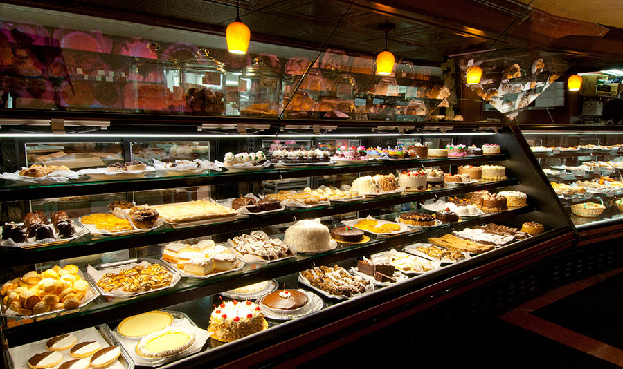

International Sweets

Welcome!
I've done some traveling in and outside the US, and always make sure to try the local cuisine. I created this website to share some of the traditional desserts I've come across. The majority are dishes I have tried in the past, in addition to some that I hope to try in the near future.